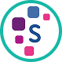
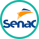
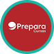

O Instituto PROA é uma organização sem fins lucrativos que oferece
capacitação profissional e qualificação gratuita para jovens de
escolas públicas ingressarem no mercado de trabalho. O principal
foco é atuar como uma porta de entrada para o primeiro emprego ou
recolocação profissional...
Instituição: Serasa Experian
Curso: Transforme-se
Local: São Paulo - SP

O Transforme-se é um programa de qualificação profissional gratuito
voltado para jovens de baixa renda. Ele é realizado pela Serasa
Experian em parceria com a rede Gerando Falcões e apoio educacional
do Senac...
Instituição: Senac São Paulo
Curso: Diversos - Programa de Bolsas
Local: São Paulo - SP

Acreditamos que a educação tem o poder de transformar vidas. Por
isso, anualmente, o Programa Senac de Gratuidade garante o acesso a
milhares de bolsas de estudos. Até 2023, foram mais de 1,5 milhão de
pessoas atendidas pelo programa...
Instituição: Senai Presidente Altino
Curso: Diversos (verificar disponibilidade)
Local: Osasco - SP
O SENAI Osasco (Escola Nadir Dias de Figueiredo) oferece formações
gratuitas nas modalidades de Aprendizagem Industrial, Cursos
Técnicos, Cursos Livres e EaD. A disponibilidade de vagas varia
conforme o período do ano...
Instituição: Espro - Educa, Transforma, Inclui
Curso: Cursos de Capacitação Profissional
Local: São Paulo - SP
Capacitação profissional gratuita e voltada para o desenvolvimento
de habilidades interpessoais e empregabilidade, focada em jovens em
situação de vulnerabilidade...
Instituição: Prepara Cursos
Curso: Cursos Diversos
Local: São Paulo - SP

Prepara Cursos (também conhecida como Prepara IA) é uma das maiores
redes de ensino profissionalizante e tecnológico do Brasil, focada
em preparar jovens e adultos para o mercado de trabalho com uma
metodologia que utiliza inteligência artificial...